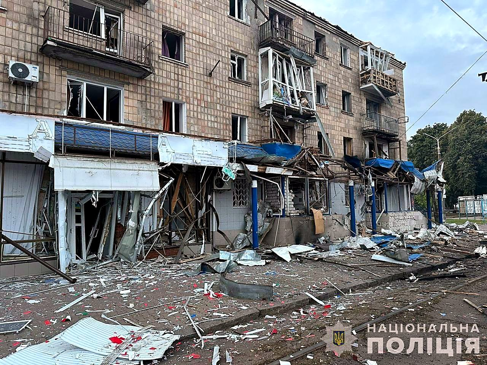
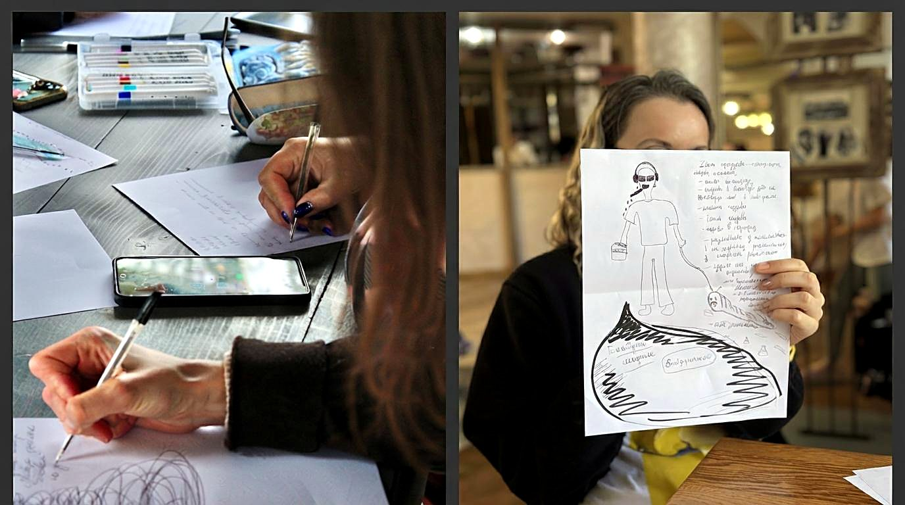
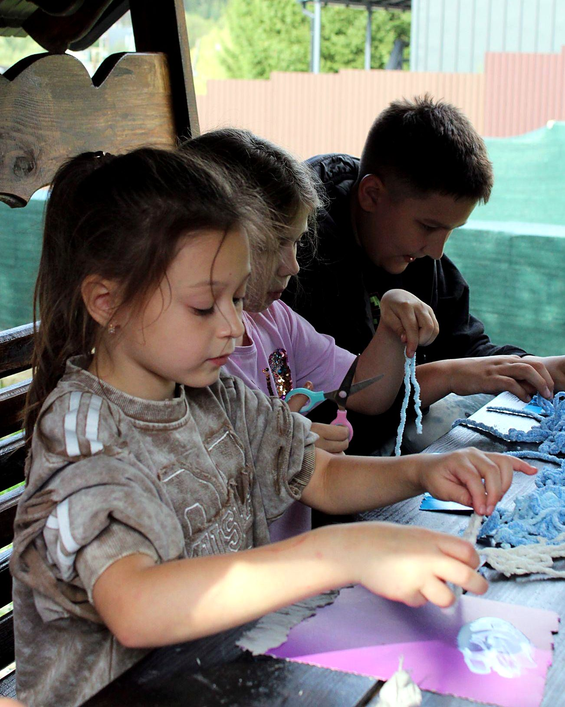
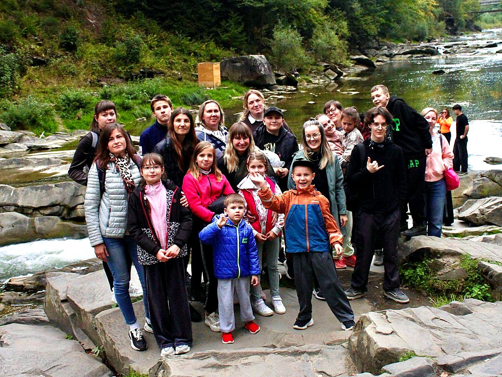

What is daily life like when the sound of an explosion can come at any moment? For many Ukrainian women and children, war is not a news story. It is the reality of raising a family while husbands and fathers serve at the front.

This home was destroyed by the Russians and was one participant’s family home.
While much is written about the courage of those serving at the front, less attention is given to the wives and mothers who may spend years parenting largely alone, managing homes and children while living with continual anxiety for loved ones serving in combat. The emotional toll of prolonged uncertainty can be enormous.
This is why psychologist and expressive arts therapist Anna Liudnova came up with the idea for a two-day poetry therapy retreat in the Carpathians, the Ukrainian mountains, where it is quiet, peaceful, and free from missile strikes (closer to the EU border) — a retreat combining safety, quiet, creativity, connection, and rest.
For two days in September, twelve Ukrainian military families came to Yaremche in the Carpathian Mountains and experienced something that had become almost unimaginable:
There were no air-raid sirens.
There were no explosions.
There was quiet.
Meals, lodging, and transportation were provided through Baltic Street Into Action, allowing the women and children to focus simply on resting, creating, connecting, and healing.
Watch
Two Days of Peace
A two-minute look at the retreat
The Retreat
Ways to Release, Express & Reconnect
From hiking and outdoor play to writing, art, poetry, movement, and sound-based relaxation, the retreat offered families different ways to release tension, express what had been difficult to say, and reconnect with moments of safety and joy.
While the children participated in their own activities, the women laughed together, cried together, shared deeply personal experiences, and put emotions that had often remained unspoken onto the page.

The participants’ stories are striking.
Their Stories
Lives Shaped by War
01
One woman and her child survived the Russian occupation and the terror of cluster munitions.
02
Another battled cancer while caring for her grandson as her son and daughter-in-law endured captivity.
03
A third has raised her child largely on her own since 2014, while her husband has served on the front since the earliest days of Russia’s military aggression against Ukraine.
Each story is different, yet all are bound by a common thread: the profound and lasting impact of war.

Viktoriia Olshanovska joined the retreat to conduct creative masterclasses and outdoor active games for the children, and photographer Violeta Homzak was engaged to document the event.
Thanks to Baltic Street Into Action, Anna Liudnova — mentored in poetry therapy by Sherry Reiter, Ph.D. — was able to provide a retreat that participants called “magical.”
What made that magic possible?
The beauty and quiet of the Carpathian Mountains.
The courage and compassion of community.
The expressive arts, which gave participants a way to tell their stories and open the floodgates to expression.
And perhaps there is something else.
What is the opposite of war?
“War is destruction, and perhaps the impulse to make war is part of human nature. But here, Anna has created an extraordinary opportunity to do the opposite — to create. Creativity is key to regeneration and survival.”
In Their Own Words
Voices of Participants
“These are the happiest few days I’ve had recently… We arrived like hedgehogs, but… we opened up like flowers… I was so overwhelmed that I said ‘I don’t want to live.’ But you begin to understand that, well, I will live, life goes on… And I thank each of you for listening, for making it not scary to open up and tell it just as it is. Thank you all so, so much!”
“…I didn’t know why I was going, I just came here following the call of my heart, and I am going back with an incredible suitcase of emotions, knowledge, and people by my side, and I thank you all so much.”
“I found several practices for myself because they really work, and I feel so calm… maybe this will be the beginning of some friendship, because we lose friends… I can’t even call these retreats, this is some sort of… it’s a feeling of home, a feeling of some kind of family.”

Retreat families together by the river in Yaremche, in the Carpathian Mountains.
Help Us Create More Days Without Sirens
For two days, these women and children were given something extraordinarily simple: a chance to feel safe, to create, to connect, and to rest. Join Baltic Street Into Action in helping provide healing experiences for women and children affected by the war in Ukraine.